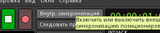
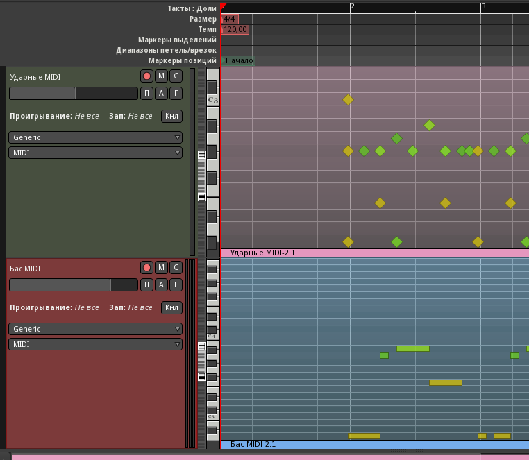

У нас есть два инструмента - бас и ударные, а значит, можно вознаградить себя за усердие и наконец-то написать несколько тактов нашей будущей композиции. Начинать будем не с начала, а с некоторого абстрактного куска где-то посередине, который потом дополним вступлением, развитием темы, отступлениями и дополнительными частями. На этом этапе будет выбрана тональность и темп.
Переключимся в редактор MusE нашей комнаты Эксперименты и создадим пару простеньких паттернов для каналов 1 (бас) и 10 (ударные). Кликом правой кнопки на пустом месте в заголовках компановщика добавляем трек ударных и назваем его Drums. Повторяем операцию, но теперь добавляем MIDI-трек, называем его Bass. По умолчанию должны выбраться правильные каналы и MIDI-порт jack-out для обеих дорожек.

Воспользовавшись карандашом на панели инструментов (или нажав D), нарисуем клипы на этих дорожках. Длина - 4 такта (от 1 до 5). Сменим курсор обратно на стрелку, нажав A или на соответствующую кнопку панели.
MusE предоставляет широкие возможности по расположению окон, воспользуемся ими. В меню Настройки->Общие настройки->Стиль ГИП выберем пресет MDI в стиле Borland-/Mac. Теперь уберём разворачивание с окна копоновщика и расположим его где-нибудь слева. При двойном щелчке на каждом из клипов открывается пиано-ролл (можно также редактировать в режиме партитуры, выбрав соответствующий пункт из контектстного меню компоновщика). Расположением окон и подгонкой масштаба можно сделать так, чтобы редакторы ударников и баса совпадали по вертикали, это упростит дело при коррекции нот мышкой.
Для записи с клавиатуры понадобится метроном. Чтобы он заработал, нам нужен аудиовыход, который создается, как мы уже создавали MIDI-треки, только в контекстном меню выбираем пункт Добавить аудиовыход. Переименуем эту новую дорожку в Click, и в Claudia подсоединим выходы от неё к мониторным выходам комнаты. Метроном включается кнопкой в конце третьей строки тулбара, а его параметры редактируются в меню Настройки->Метроном. Там нужно выбрать для него вход Click.

Зациклим один такт, нажав правой нопкой мышки на цифре 2 на шкале тактов. Это переместит правую границу цикла на эту цифру (левая перемещается средней кнопкой мыши). Включив цикл на тулбаре, нажимаем кнопку воспроизведения. Должен быть слышен метроном, немного сбивающийся в начале такта. Остановим воспроизведение пробелом.
Сбивка происходит из-за того, что Ardour не поддерживает полноценную синхронизацию циклов JACK. Но Ardour нам пока и не нужен, так что переключим в нём синхронизацию на внутреннюю, нажав соответствующую кнопку на тулбаре.
Вернувшись в MusE, снова запустим воспроизведение (пробел). Теперь метроном играет правильно и цикл стыкуется безупречно. Для записи отключим цикл и нажмём кнопку записи на тулбаре, а также включим запись для нужного трека в столбце R.
Запишем с MIDI-клавиатуры (или введём мышкой) рисунки для одного такта ударных и баса. Но перед этим сдвинем оба клипа на такт вправо, чтобы оставить один такт для предварительного отсчёта.
При создании басовой партии нужно помнить, что она должна перекликаться с бочкой, ноты надо начинать либо одновременно с бочкой, либо обыгрывать сильные и слабые доли такта чередованием бочки и баса - в общем, играть так, будто это один сложный инструмент. Кроме того, не стоит увлекаться мелодической линией. Бас - инструмент очень тяжёлый, и перетянет на себя функции лидирующей партии, а аккомпанементу останется лишь настаивать на тонике, либо модулировать и оттенять басы. Обычно достаточно обыгрывать басом только тонику и доминанту (и, возможно, третий звук аккорда, если вас не смущают басовые замены).
Это в идеале, а в реальности получилось показанное на скриншоте. Бас всё-таки вышел довольно мелодическим, в духе классического биг-бита. Наверно, темпом навеяло. По умолчанию, он повсюду 120 ударов в минуту, не станем пока его менять.

Скопируем этот такт на три последующих и немного подправим с вариациями.

Импортируем результат на дорожки Ardour и продолжим редактирование там. Попробуем их просто записать.


Запустим воспроизведение и остановим где-нибудь на тишине после шестого такта. Запись на дорожке можно отключить. Повторим процедуру для дорожки Бас MIDI, не забыв в MusE снять соло с ударных и включить на треке Bass.
Результат записался немного опережая время, поэтому подгоним клипы, сместив их чуточку вправо с отключенной сеткой, а затем отквантуем с разрешением 1/16. Потом обрежем слева и справа, чтобы они занимали свои четыре такта (2-6) инструментом Захват (палец).

На канал ударных можно добавить немного свинга (30%-40%), используя плагин midiSwing после фильтра каналов.